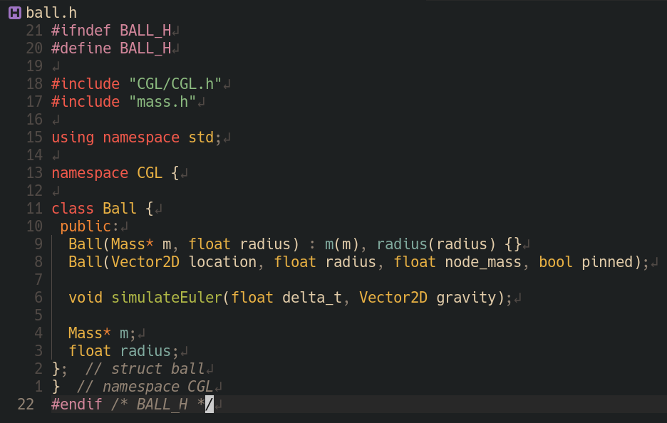
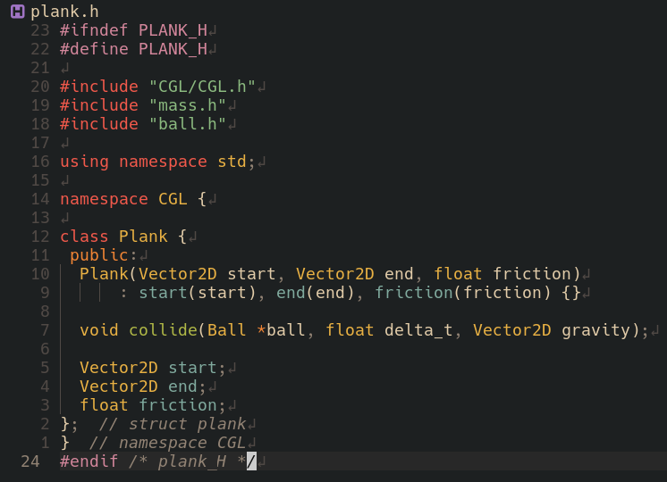
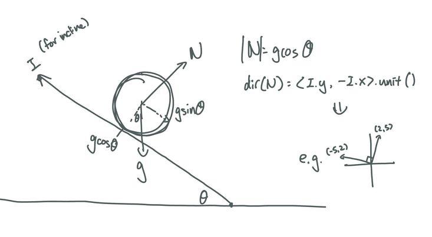
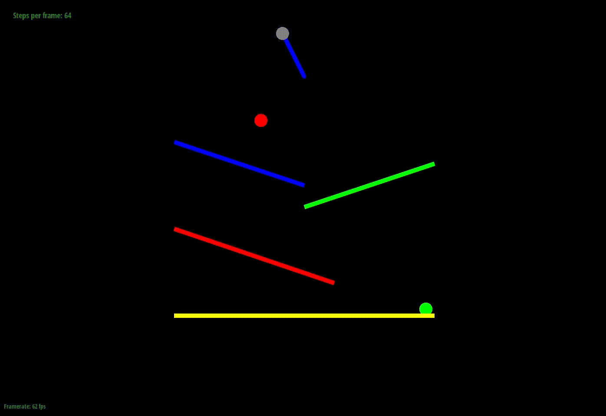
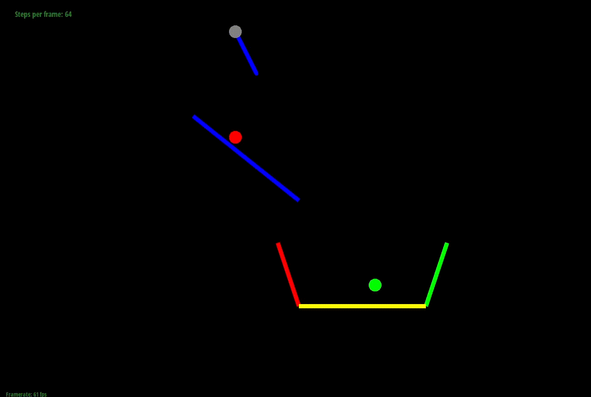
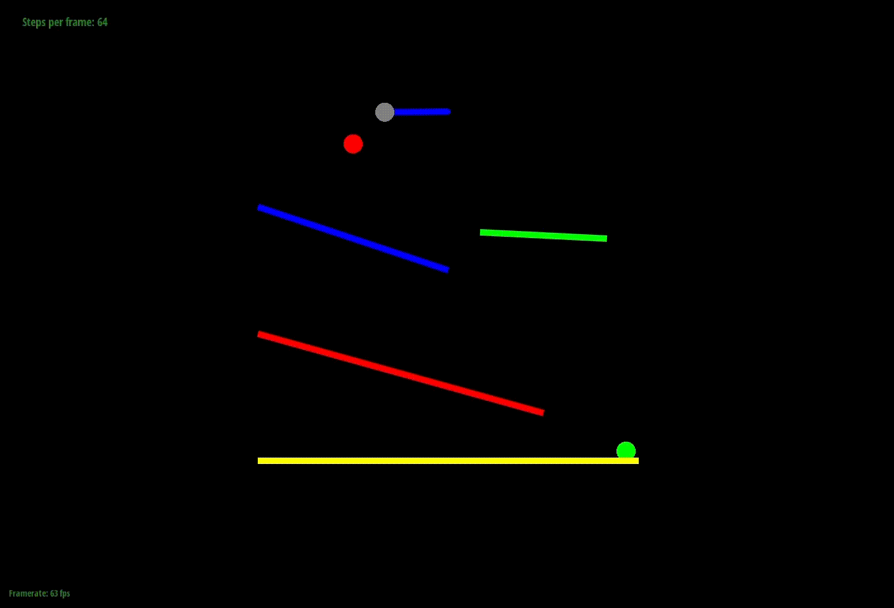
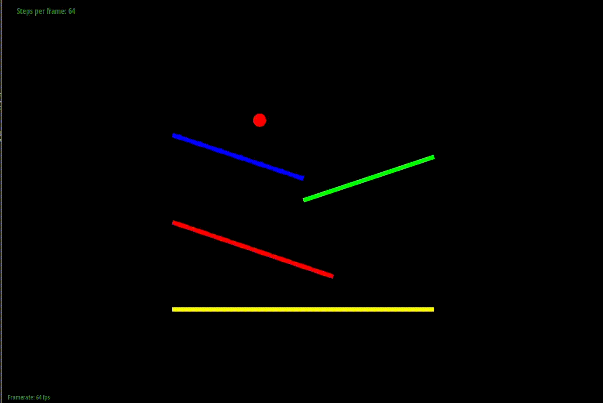
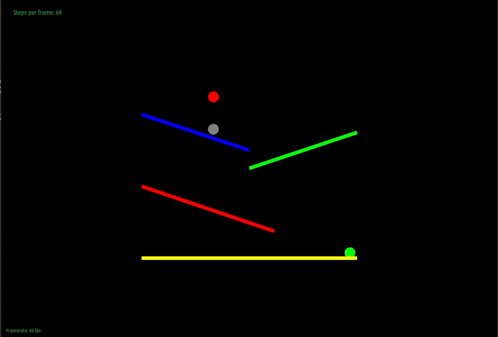

Abstract
In this project, we create a physics animation simulating a Rube Goldberg machine involving planks that a ball will interact with as it falls down and “completes the course.” We simulate the kinematics of a rolling ball colliding with and rolling down surfaces. From a physics standpoint, we determined the forces and directions acting on all objects in the scene in order to create a realistic simulation. From a computer graphics angle, we used OpenGL to display the physical interactions, and created keyboard and console line inputs to specify course presets and other parameters. Overall, we were able to create a realistic-looking 2D physics animation of a ball interacting with many other objects.
Technical Approach
Data Structures:
|

|

|
We’ve created new classes for the Ball and Plank objects. The Mass struct, which we inherited from discussion, contains a position, last_position (from the last time step), mass (of the object), and whether or not the object is pinned. The Ball class contains a Mass struct to store position information, as well as fields to store the Ball’s mass and radius. The Plank class stores the two endpoints of each plank, as well as a friction coefficient for balls rolling down the plank.
Physics:
|

|

|
Our ball moves under a simulateEuler() function, which applies
the total external forces on the ball to calculate new velocity and move
the ball to its next position. When free-falling, the ball is acted upon by
a downwards gravitational force. To detect a collision between a ball and a
plank, we model each plank as a ray, with two endpoints and a direction. We
define the equation of the plank as a ray using its endpoints and
direction, and the equation of the ball as a circle using the ball’s radius
and center position. Setting the two equations equal to each other, we can
solve a quadratic equation to figure out whether or not there is an
intersection, and where the intersection point is, as explained in this
post.
To simulate the motion of a ball rolling down a plank, we first calculate the total force exerted by the plank on the ball: the normal force exerted on any stationary ball, and an extra reactionary force to the ball’s existing velocity upon collision with the plank. The normal force has magnitude |gravity| * cos(theta), and points in the same direction as the normal to the plank. This is calculated using the diagram below; the normal force must equal to component of gravity perpendicular to the plank, which is |gravity| * cos(theta).
However, when the ball falls on the plank with an initial velocity, that initial velocity is going to exert an additional force on the plank, resulting in an additional reactionary force from the plank to the ball. The reactionary force is calculated to cancel out the component of velocity perpendicular to the plank, and has the same direction and a magnitude of |velocity| * cos(alpha) * mass / delta_t, as seen in the diagram below. Given a new total force exerted on the ball, we calculate a new velocity vector for the ball, and update the ball’s position based on the new velocity.
We also added a frictional force on the planks when the ball is rolling down. The frictional force is calculated as F=uN, where u is a predetermined frictional coefficient, and N is the normal force from the plank to the ball. The frictional force acts in the opposite direction of the ball’s velocity, and slows the ball down as it rolls along.
To simulate ball-to-ball collision, we used the elastic collision formulas, referring to the post linked here, therefore making the assumption that the balls are colliding elastically, with no loss of kinetic energy. Using conservation of momentum and kinetic energy equations, we were able to calculate the new velocities as:
V1’ = v1 - 2m2/(m1 + m2) * dot(v1 - v2, x1 - x2) / norm(x1 - x2), in the direction of x1 - x2
V2’ = v2 - 2m1/(m1 + m2) * dot(v1 - v2, x1 - x2) / norm(x1 - x2), in the direction of x1 - x2
Ball-to-ball collision was detected whether the centers of two balls are closer than the sum of their radii. We call ball-to-ball collision before detecting ball-to-plank collision, so that the new velocities can be adjusted based on whether or not the balls were colliding into some other object in the same time step.
Inspired by the game Cut the Rope, we modify the original Rope class to include a Ball at one of the ends that can swing and be released when the Rope is “cut.” Because the Ball class maintains a Mass struct as its core, we simply create a Ball object and add its Mass as part of the final Spring contained by the Rope. To “cut” the Rope, we reduce the spring constant of the final Spring of the Rope to 0, reset the forces on the Mass of the Ball to 0, and stop drawing the Rope.
Keyboard Input
The rope_simulation discussion code already implements the Application::keyboard_event() function. To add more keyboard input, we simply add more cases mapping characters to events. To [C]ut the Rope, press ‘C’ on the keyboard. This calls our cutRope() function, whose effects are described in the physics section. If the Rope is not cut by the user, it will be automatically cut after 184 render() loops occur, tracked by a counter. We bind [P]ause and [U]npause functionality to ‘U’ and ‘P’. The user can [R]eset the current course by pressing ‘R’ on the keyboard. This calls our reset() function that places all moving objects back to their original positions, resets the simulation counter, and unpauses the simulation to begin again. Courses 1-6 are bound to their respective numbers on the keyboard for quick and easy initialization of each course.
Problems Encountered
Ball-Plank collision
Initially, we simulated the ball rolling down a plank as a set force in the direction of the plank, scaled up to a set magnitude. However, this does not take into account the initial velocity the ball has when landing on the plank, nor the friction or acceleration the ball gains upon rolling down the ramp. We fixed the collision physics to include the normal force from the plank to the ball, as well as an elastic force due to the initial velocity of the ball onto the ramp. Each of these forces have components perpendicular and parallel to the plank, which affect the ball’s acceleration down the plank. We also added a configurable friction force in the opposite direction of velocity. With these fixes, we saw significant improvements in the simulation, allowing for a more realistic animation.
Ball-to-Ball overlap
We encountered a bug where the two balls colliding would overlap before moving apart. The issue was simple -- instead of calculating the distance between the centers of two balls, we were calculating the distance squared (Vector2D.norm2() instead of Vector2D.norm() in the code) in our check for whether or not the balls touched, which meant that we weren’t detecting a ball-to-ball collision until the distances were very close.
Rope-Ball release physics
After implementing the physics for when our rope is “cut” and the ball is released, we noticed that the release velocity of the ball (which is expected given that it has angular momentum from the rope swinging) was not being simulated: instead, the ball was just dropping straight down from its last position. We realized that the issue of this bug was due to the imbalance of the strength of our springs and the mass of the ball. After simply increasing the mass of the ball in the simulation, we saw improvements in the simulation.
Lessons Learned
- Start with given code: saved us time when integrating with OpenGL so we could spend time designing the physics of our simulation.
- Have separate classes for each object: we were debating whether or not to use the “Mass” class as a ball, but having a separate Ball class made it much easier to keep track of variables and properties. This illustrates the power of abstraction, as we easily created a ball at the end of a rope by composing the Rope and Ball class together because we modeled the ball as having a Mass at its center and a radius. The Rope could then just have its final Mass object be that of a Ball. Moreover, implementing the reset() function was trivial because Rope and Ball are composed of Mass structs. We could just implement Mass::reset(), which resets the position to its start_position and zeroes out velocity and forces, once and then reuse it for the other objects’ reset() functions. Then Ball::reset() just requires calling reset() on its Mass, and Rope::reset() simply involves calling reset() on each Mass in its vector of Masses.
- Keep track of directions: Oftentimes, our bugs came from inputting the opposite direction, whether that be the direction of the frictional force on a plank or the normal direction from the plank. This results in our ball velocities increasing instantaneously, often flying out of the frame in one or two timesteps. Keeping track of vector directions would help streamline our physics development a lot.
Results
|

|

|
|

|

|
|

|
|
References
- https://stackoverflow.com/questions/1073336/circle-line-segment-collision-detection-algorithm
- https://stackoverflow.com/questions/35211114/2d-elastic-ball-collision-physics
- Cut the Rope - Gameplay Trailer
- Line Rider - Mountain King
- Starting off with https://github.com/cal-cs184/rope_simulation/tree/solution-sp22 as our base code for GUI.
Contributions
- Reina: Ball-plank collision/rolling physics; Ball-Ball collision physics; deliverable course presets; milestone report; final deliverable report.
- Patrick: Ball-plank collision/rolling physics; Rope-Ball Simulation physics; milestone video; final deliverable presentation & report.
- Tymon: Ball-plank collision/rolling physics; Rope-Ball Simulation physics; keyboard input; deliverable course presets; milestone report; final deliverable report.
- Maggie: Ideation; Rope-Ball Simulation physics.